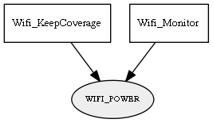

Global overview
All modules
All variables
All commands
Mission files
Pipelines
Variable: WIFI_POWER
Variable info:
Variable name
Short description
Who publishes it?
Who subscribes to it?
WIFI_POWER
Strength of the wifi signal (0 to 100) monitored as a double value.
Wifi_KeepCoverage
Wifi_Monitor
Variable graph:

Detailed description:
Strength of the wifi signal (0 to 100) monitored as a double value.
Page generated by
Mooxygen 1.1.0
at Thu Jan 22 11:30:21 2015